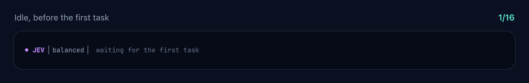
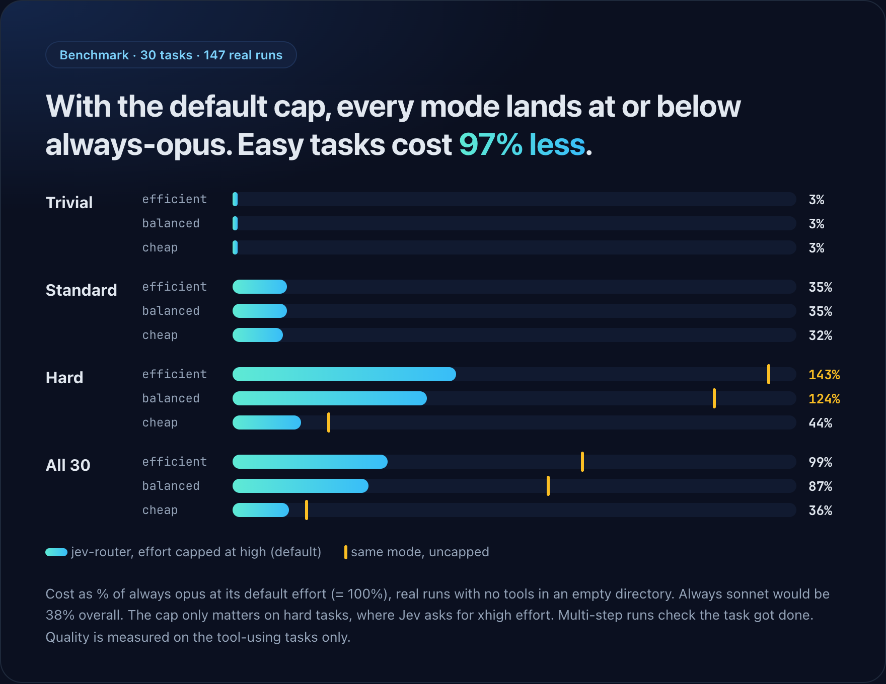
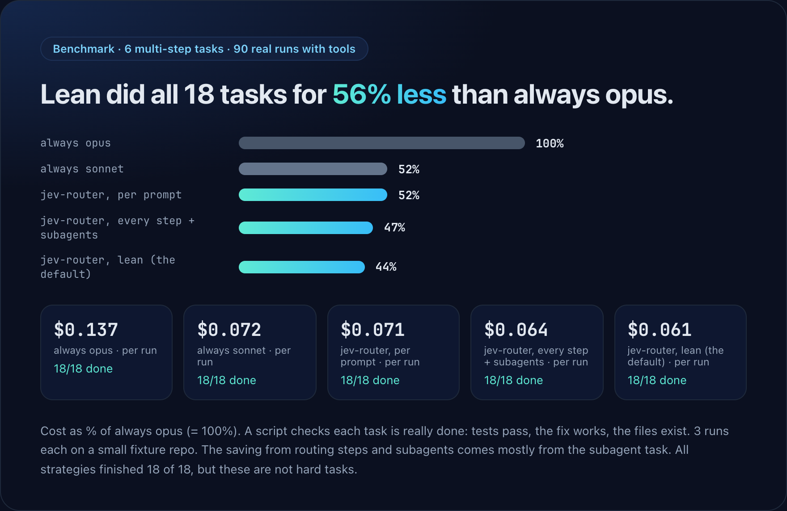
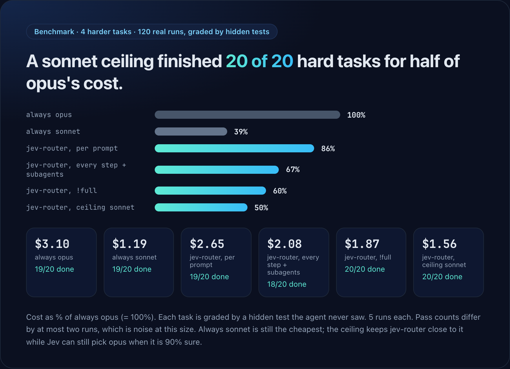

What is jev-router?
Using one model for everything wastes money: an expensive model renames a variable, a cheap one stalls on a hard refactor. jev-router is a Claude Code plugin (a "mod") that asks TypeSafe Jev which Claude model and effort a task needs, then runs the turn on that choice. It works per prompt, again before each step of a long task, and once for every subagent.

Install
You need Claude Code with plugin support and a TypeSafe API key.
/plugin marketplace add dominicrico/jev-router
/plugin install jev-router@jev-routerThen give it your key with /jev key <key> or the TYPESAFE_API_KEY environment variable, and run /jev status.
Features
high by default, because extra reasoning is what makes hard tasks expensive. !full lifts it for one prompt./jev ceiling sonnet keeps tasks off Opus unless Jev is 90% sure. A sonnet ceiling finished 20/20 hard tasks at half the cost of Opus.!opus, !sonnet, !haiku pin a model with no Jev call; !cheap and !efficient set the mode./jev status estimates your saving against the model you would otherwise use.Does it save money? The benchmarks
Everything is measured with real Claude Code runs and reproducible scripts. The honest summary: it saves a lot on easy and medium work, costs more than plain Sonnet on harder work, and with the default effort cap no mode costs more than always using Opus.

| Cost vs always Opus | efficient | balanced | cheap |
|---|---|---|---|
| Trivial tasks | −97% | −97% | −97% |
| Standard tasks | −65% | −65% | −68% |
| Hard tasks (effort capped at high) | +43% | +24% | −56% |
| All 30 tasks | −1% | −13% | −64% |


On the harder, hidden-test-graded tasks plain Sonnet did as well as Opus and cost 61% less. A sonnet ceiling finished 20 of 20 for half of Opus's cost. In long warm sessions, routing cost more than staying on one model (the cache guard cut the penalty from +38% to +24% against Opus), so routing helps most when your tasks vary, your context is small or cold, or your default is Opus. Method, limits and raw results are in the benchmarks folder.
FAQ
How do I switch between Opus, Sonnet and Haiku automatically in Claude Code?
Install jev-router. It picks the model per prompt, and you can override one prompt with !opus, !sonnet or !haiku.
How do I reduce Claude Code token cost?
Route easy tasks to cheaper models and cap reasoning effort. jev-router does both, and shows an estimated saving in /jev status. The benchmarks above show where it helps and where it does not.
Does the prompt cache guard work?
Yes, but it does not make routing free. In real long sessions with a large warm cache it cut model switches from 6.3 to 1.0 and cache re-writes by 60%, yet routing still cost more than staying on Opus (+24% with the guard, +38% without). Use a ceiling or plain Sonnet for long warm sessions.
What is the effort cap?
Jev often asks for xhigh effort on hard tasks, which can use several times the tokens. The cap limits it to high by default. Start a prompt with !full to lift it once.
Does it send my code anywhere?
It sends the prompt text, optionally recent messages, and subagent task descriptions to api.typesafe.ai. API keys, tokens, private keys and password= style values are redacted first, and sendHistory turns the history off. Pattern redaction is not a guarantee.
Will it slow Claude Code down?
Each Jev call adds about 250 ms. After three failed calls in a row it pauses for a minute and keeps the current model.
Which models does it use?
Claude Haiku, Sonnet, Opus and Fable, narrowed by the models option.